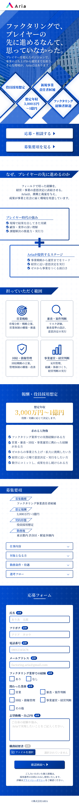

RECRUITMENT LANDING PAGE / 2025
Aria
Factoring Recruitment
担当 / ROLE
構成設計
Webデザイン
カテゴリー・制作年
採用LP / 2025
制作範囲 / SCOPE
SP

OBJECTIVE / 01
未経験から挑戦できる仕事の価値と、成長の道筋を明快に伝える。
概要 / OVERVIEW
ファクタリング事業の営業・審査担当者を募集する採用LPです。仕事内容、担当範囲、報酬、募集条件、応募フォームまでを一ページにまとめました。
課題 / PROBLEM
専門用語の多い業務を初めて見る人にも理解しやすくしながら、責任あるポジションとしての魅力を損なわずに伝える必要がありました。
アプローチ / APPROACH
信頼感のあるブルーを基調に、図解と数値で情報を段階的に整理。仕事内容から応募までの流れを一本道にし、長いページでも現在地を見失いにくいリズムを設計しました。
FULL VIEW / 02